Demkaterrein — van bedrijventerrein naar woonwijk
Het Demkaterrein is een voormalig industrieterrein langs het Amsterdam-Rijnkanaal in Utrecht. De opdracht was om te onderzoeken hoe dit terrein omgevormd kan worden naar een woonwijk. Samen met Julian Freling heb ik een schetsontwerp gemaakt voor "Het Demkapark" — een wijk met rijtjeshuizen, appartementen, groen, wadi's en fietspaden.
Om onderbouwde keuzes te maken voor het ontwerp heb ik negen GIS-kaarten gemaakt van het gebied en de omgeving. Denk aan de grondwaterstand, luchtkwaliteit, hitte-eiland effect, wateroverlast en de afstand tot koelte. Die analyses vormen de basis voor de inrichting van de wijk.
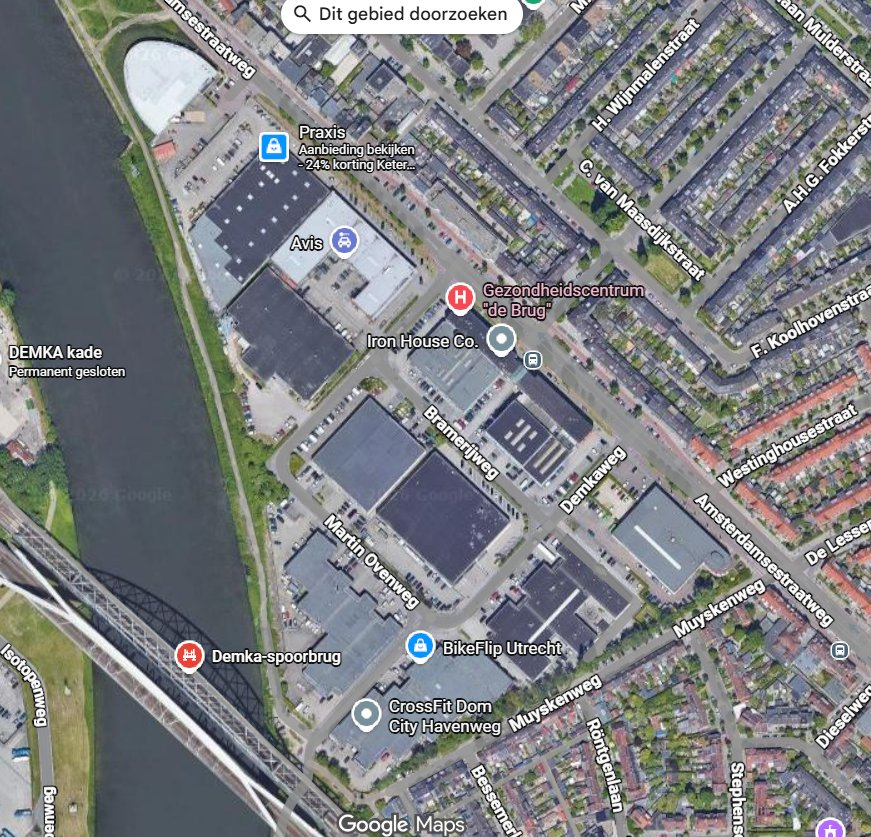
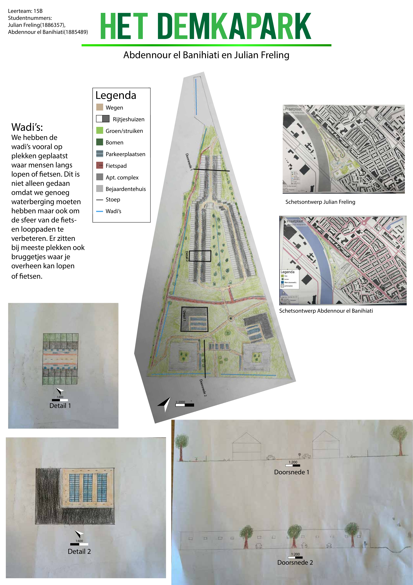
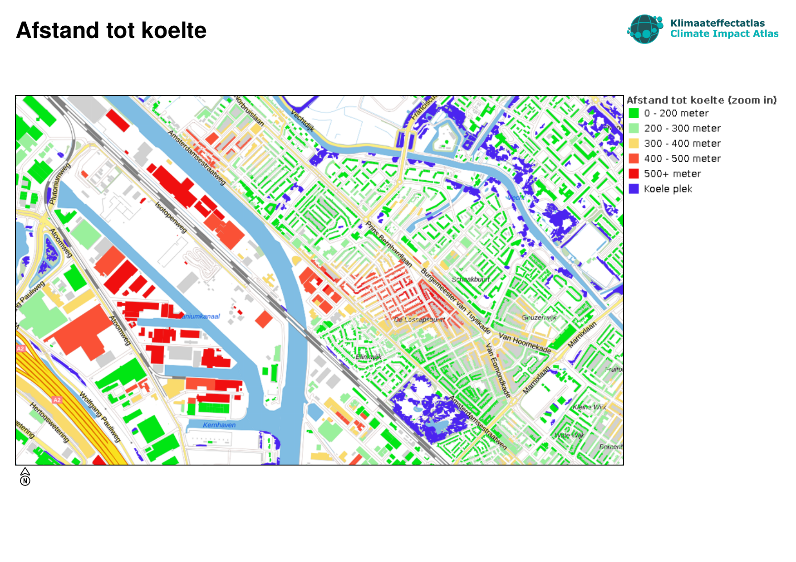
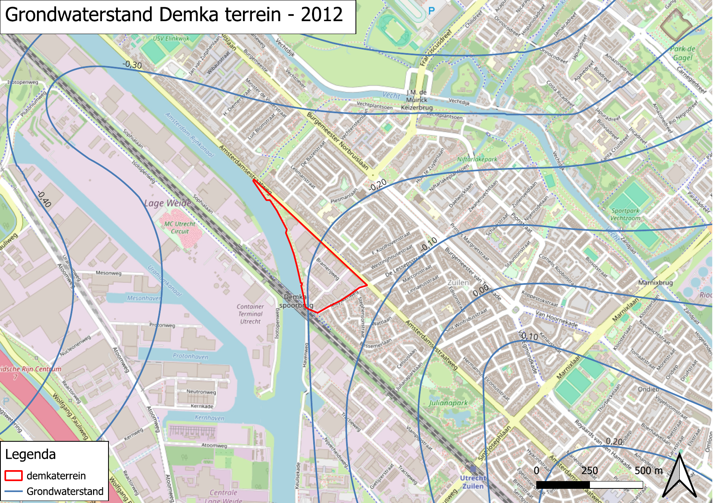
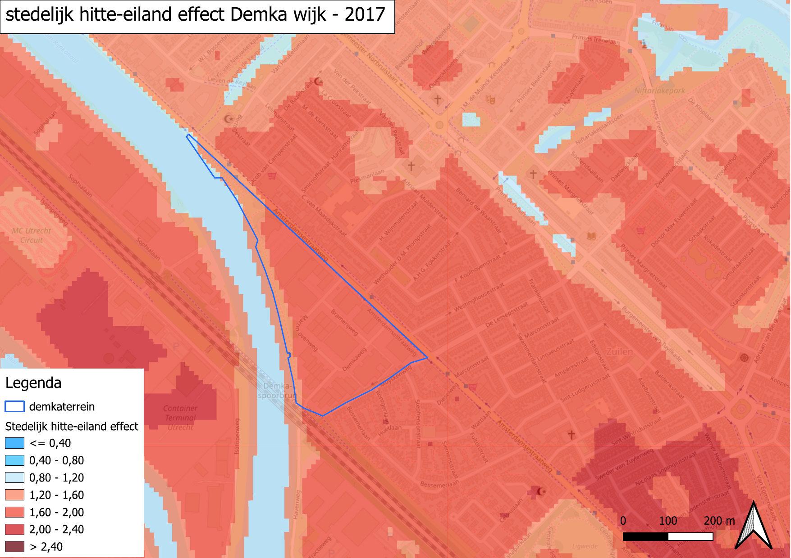
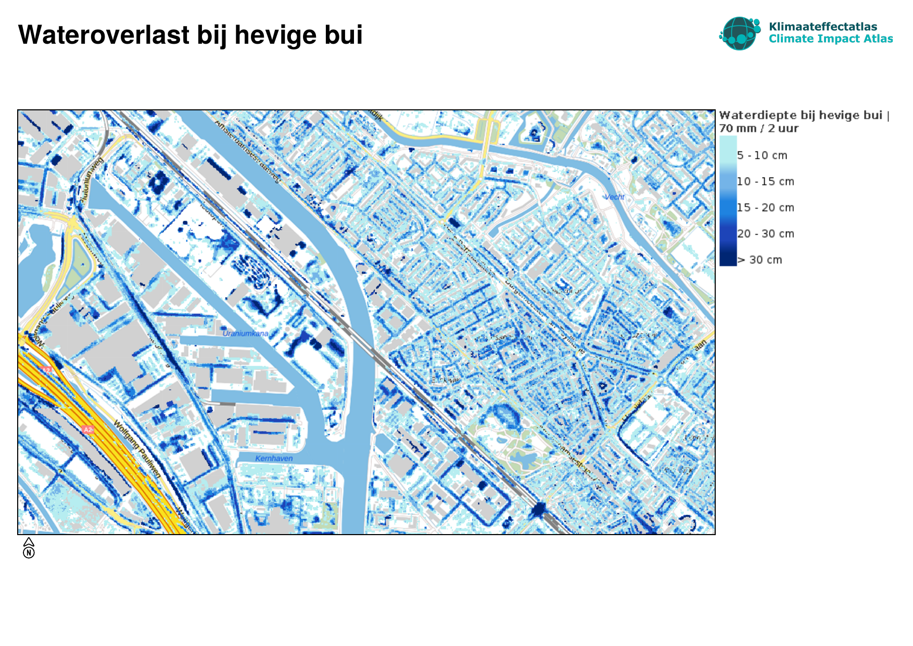
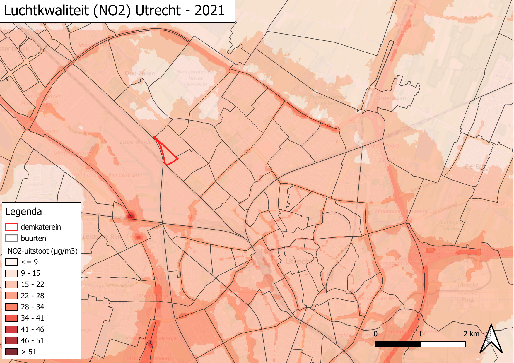
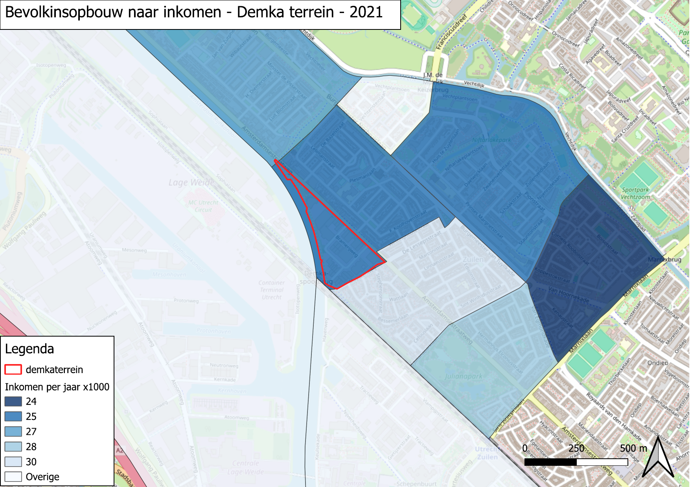
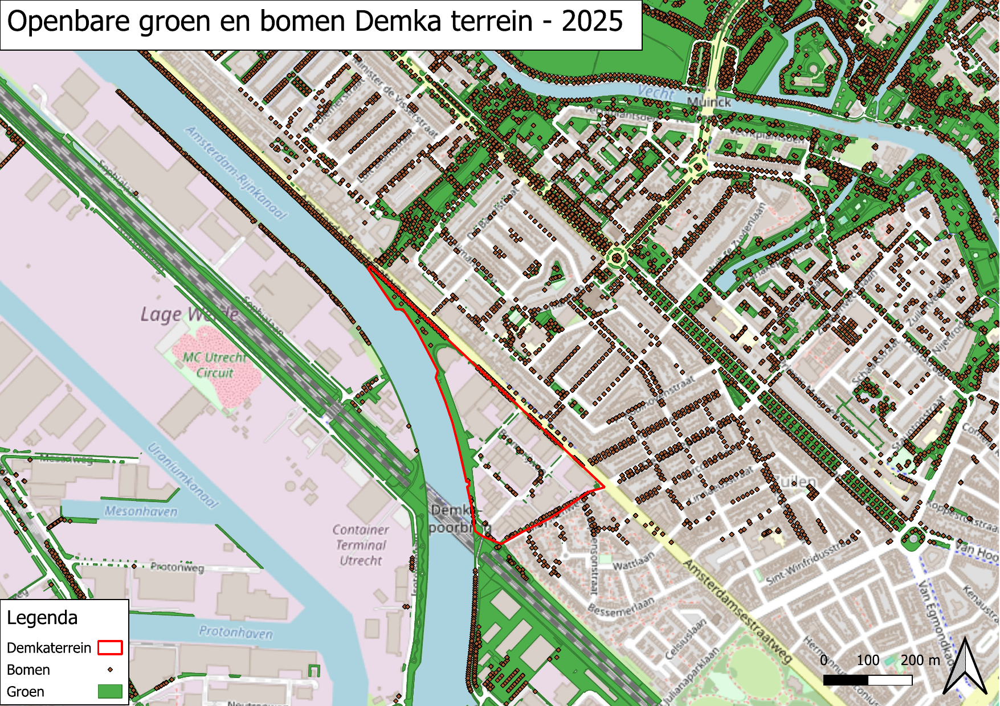
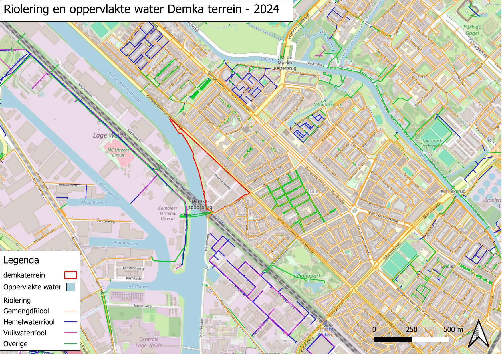
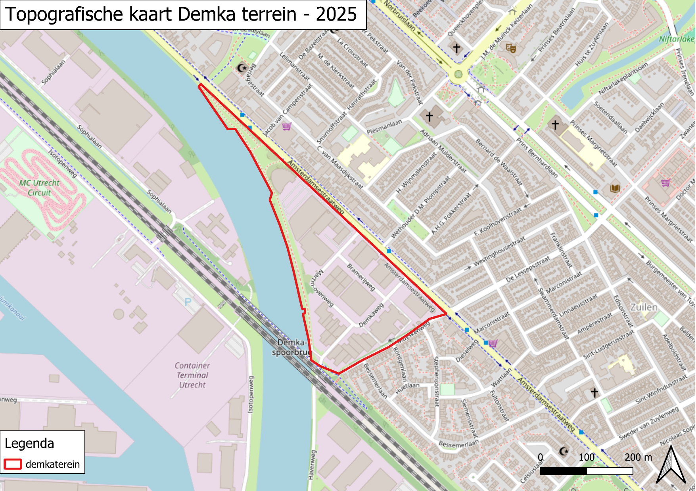